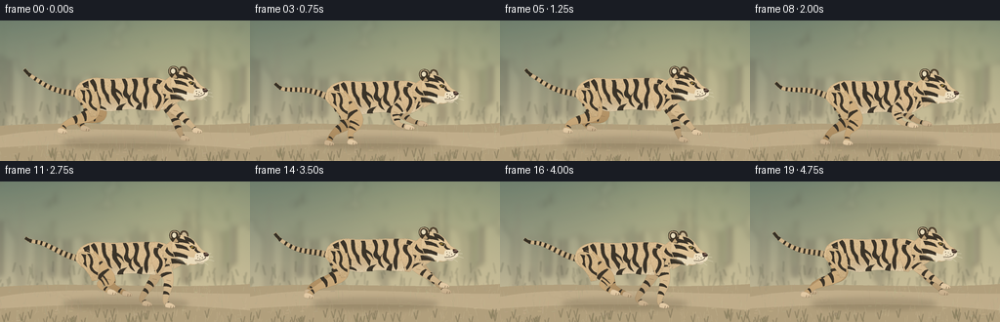
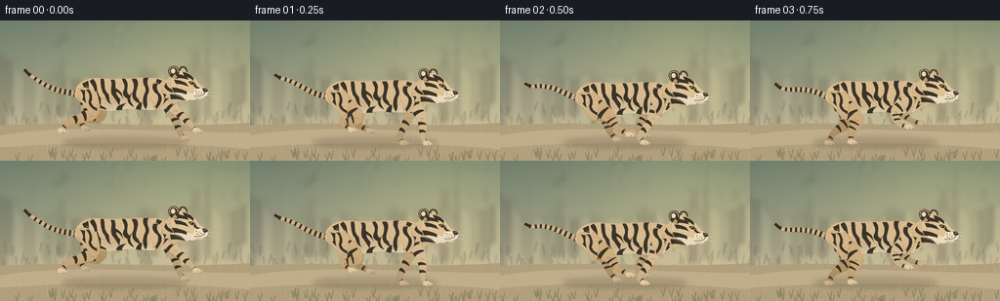

CODING AGENTS AS PIXEL WORLD MODELS
traex/GPT-6.1-Sol · instance_preservation_0007
点击播放 · 原生 RGB 像素
逐轮保存的候选
回放视频、检查图与代码变化。
每份候选均可单独播放。实际图片检查记录在下方工具轨迹中。
候选 01播放与检查图
点击播放 · 原生 RGB 像素

展开代码变化
--- 上一保存版本
+++ 本次保存版本
@@ -0,0 +1,310 @@
+from pathlib import Path
+import math
+import numpy as np
+from PIL import Image, ImageDraw, ImageFilter
+from artifact_io import save
+
+W,H,S=256,144,4
+WW,HH=W*S,H*S
+rng=np.random.default_rng(37291)
+
+def bezpath(commands):
+ pts=[]; cur=None
+ for c in commands:
+ if c[0]=='M': cur=np.array(c[1:],float); pts.append(tuple(cur))
+ elif c[0]=='L': cur=np.array(c[1:],float);pts.append(tuple(cur))
+ elif c[0]=='C':
+ a=cur.copy(); b=np.array(c[1:3]);cc=np.array(c[3:5]);e=np.array(c[5:7]);
+ n=max(10,int((np.linalg.norm(b-a)+np.linalg.norm(cc-b)+np.linalg.norm(e-cc))*1.2))
+ for t in np.linspace(0,1,n)[1:]: pts.append(tuple((1-t)**3*a+3*(1-t)**2*t*b+3*(1-t)*t*t*cc+t**3*e))
+ cur=e
+ elif c[0]=='Q':
+ a=cur.copy();b=np.array(c[1:3]);e=np.array(c[3:5]);
+ for t in np.linspace(0,1,20)[1:]:pts.append(tuple((1-t)**2*a+2*(1-t)*t*b+t*t*e))
+ cur=e
+ return pts
+
+def polygon(im,pts,fill): ImageDraw.Draw(im).polygon([(round(x*S),round(y*S)) for x,y in pts], fill=fill)
+def line(im,pts,fill,width=1): ImageDraw.Draw(im).line([(round(x*S),round(y*S)) for x,y in pts],fill=fill,width=max(1,round(width*S)),joint='curve')
+def ellipse(im,box,fill):ImageDraw.Draw(im).ellipse(tuple(round(x*S) for x in box),fill=fill)
+def path(im,cmd,col):polygon(im,bezpath(cmd),col)
+
+# Finely textured, atmospheric woodland with a sunlit open trail.
+def background(f):
+ yy,xx=np.mgrid[:HH,:WW];y=yy/S;x=xx/S
+ top=np.array([109.,125.,110.]); bottom=np.array([204.,190.,155.])
+ q=np.clip(y/130,0,1)[...,None]
+ arr=top[None,None,:]*(1-q)+bottom[None,None,:]*q
+ glow=np.exp(-((x-198)**2/15000+(y-32)**2/6000))
+ arr+=glow[...,None]*np.array([37,29,13])
+ noise=np.random.default_rng(2).normal(0,.65,(HH,WW))
+ arr+=noise[...,None]
+ im=Image.fromarray(np.uint8(np.clip(arr,0,255)))
+ forest=Image.new('RGBA',(WW,HH),(0,0,0,0))
+ for j in range(31):
+ r=np.random.default_rng(350+j)
+ xx0=(float(r.uniform(-15,280))-f*.85)%290-17
+ ytop=float(r.uniform(-18,12));bw=float(r.uniform(2,6)); base=float(r.uniform(80,112))
+ col=(int(r.uniform(96,125)),int(r.uniform(105,126)),int(r.uniform(87,105)),int(r.uniform(48,115)))
+ polygon(forest,[(xx0-bw,base),(xx0-1,ytop),(xx0+bw*.5,ytop),(xx0+bw*.4,base)],col)
+ line(forest,[(xx0,67),(xx0-14,36),(xx0-20,25)],col,1.6)
+ for k in range(3):
+ cx=xx0+r.uniform(-23,23); cy=r.uniform(-12,48); rad=r.uniform(9,28)
+ ellipse(forest,(cx-rad,cy-rad*.5,cx+rad,cy+rad*.5),(107,125,97,35))
+ forest=forest.filter(ImageFilter.GaussianBlur(2.7*S))
+ im=Image.alpha_composite(im.convert('RGBA'),forest)
+ horizon=Image.new('RGBA',(WW,HH));
+ for j in range(100):
+ r=np.random.default_rng(1300+j);x0=(r.uniform(0,280)-f*2.5)%280-12;y0=r.uniform(87,110)
+ line(horizon,[(x0,y0+5),(x0+r.uniform(-3,3),y0-r.uniform(0,7))],(126,134,101,90),r.uniform(.3,1.1))
+ horizon=horizon.filter(ImageFilter.GaussianBlur(.65*S));im=Image.alpha_composite(im,horizon)
+ ground=Image.new('RGBA',(WW,HH));
+ path(ground,[('M',0,108),('C',75,102,170,111,256,105),('L',256,144),('L',0,144)],(177,159,124,255))
+ path(ground,[('M',0,118),('C',69,105,181,116,256,115),('L',256,132),('C',150,122,63,126,0,130)],(192,173,138,255))
+ for j in range(420):
+ r=np.random.default_rng(600+j);x0=(r.uniform(-20,300)-f*(4.9 if j%2 else 6.4))%300-20; y0=r.uniform(108,148)
+ color=(int(r.uniform(122,186)),int(r.uniform(115,158)),int(r.uniform(86,116)),int(r.uniform(40,110)))
+ if j%4==0:
+ line(ground,[(x0,y0),(x0+r.uniform(1,4),y0-.3)],color,r.uniform(.2,.8))
+ else:
+ line(ground,[(x0,y0+2),(x0+r.uniform(-2,2),y0-r.uniform(1,7))],color,.35)
+ im=Image.alpha_composite(im,ground)
+ return im.convert('RGB')
+
+# The coat is drawn on a fixed local coordinate system so its markings persist.
+FURRNG=np.random.default_rng(49)
+furpts=[(float(FURRNG.uniform(68,187)),float(FURRNG.uniform(55,100)),float(FURRNG.uniform(.35,1.3)),float(FURRNG.uniform(-.5,.5))) for i in range(3400)]
+
+class Painter:
+ def __init__(self,im,dx,dy): self.im=im;self.dx=dx;self.dy=dy
+ def pp(self,pts):return [(x+self.dx,y+self.dy) for x,y in pts]
+ def p(self,cmd,col):polygon(self.im,self.pp(bezpath(cmd)),col)
+ def l(self,pts,col,w=1):line(self.im,self.pp(pts),col,w)
+ def e(self,box,col):ellipse(self.im,(box[0]+self.dx,box[1]+self.dy,box[2]+self.dx,box[3]+self.dy),col)
+ def shaded(self,points,base=(207,179,136),belly=False,far=False,fur=False):
+ pts=self.pp(points)
+ # Work in a local bounding box for high-quality shading, economically.
+ x0=max(0,int(min(p[0] for p in pts)*S)-3);y0=max(0,int(min(p[1] for p in pts)*S)-3)
+ x1=min(WW,int(max(p[0] for p in pts)*S)+4);y1=min(HH,int(max(p[1] for p in pts)*S)+4)
+ if x1<=x0 or y1<=y0:return
+ mask=Image.new('L',(x1-x0,y1-y0));md=ImageDraw.Draw(mask);md.polygon([(x*S-x0,y*S-y0) for x,y in pts],fill=255)
+ yy,xx=np.mgrid[y0:y1,x0:x1];xx=xx/S-self.dx;yy=yy/S-self.dy
+ rel=(yy-(y0/S-self.dy))/max(1,(y1-y0)/S)
+ lit=9*np.sin(np.pi*np.clip(rel,0,1))-16*np.clip(rel,0,1)+7
+ # Stable nonlearned fur microtexture.
+ tex=1.1*np.sin(xx*10.1+yy*8)+.9*np.sin(xx*5.9-yy*17.3)
+ ar=np.zeros((y1-y0,x1-x0,3),float)+np.array(base)
+ ar+=(lit+tex)[...,None]*np.array([1,.92,.77])
+ if belly:
+ under=np.clip((yy-83)/12,0,1)
+ ar=ar*(1-under[...,None]*.78)+np.array([233,219,188])*(under[...,None]*.78)
+ shoulder=np.exp(-((xx-163)/12)**2-((yy-77)/13)**2)
+ haunch=np.exp(-((xx-90)/14)**2-((yy-77)/13)**2)
+ ar+=(shoulder+haunch)[...,None]*np.array([8,6,3])
+ ar-=np.exp(-((xx-113)/8)**2-((yy-88)/8)**2)[...,None]*np.array([13,12,9])
+ if far:ar-=np.array([23,23,21])
+ layer=Image.fromarray(np.uint8(np.clip(ar,0,255)))
+ if fur:
+ dr=ImageDraw.Draw(layer)
+ for x,y,length,sl in furpts:
+ a=((x+self.dx)*S-x0,(y+self.dy)*S-y0)
+ b=(a[0]-length*S,a[1]+sl*S)
+ col=(222,196,157) if int(x*5+y*5)%3 else (180,152,113)
+ dr.line([a,b],fill=col,width=1)
+ self.im.paste(layer,(x0,y0),mask)
+ # A very thin, warm contour, not a heavy cartoon outline.
+ edge=Image.new('RGBA',(WW,HH));line(edge,pts+[pts[0]],(85,66,45,75),.35)
+ self.im.paste(edge,(0,0),edge)
+
+STRIPE=(53,47,36)
+
+def stripe(p,cmd,far=False):
+ p.p(cmd,(58,51,40) if not far else (56,50,40))
+
+# A cat's gallop, authored as anatomically coherent limb keyframes.
+front_keys=np.array([
+ [[177,92],[196,106],[202,111]],
+ [[177,99],[180,120],[184,125]],
+ [[155,97],[141,116],[146,122]],
+ [[150,91],[158,102],[170,105]],
+],float)
+hind_keys=np.array([
+ [[91,97],[66,109],[56,117]],
+ [[108,99],[91,104],[100,112]],
+ [[111,96],[120,108],[132,115]],
+ [[106,101],[94,115],[91,125]],
+],float)
+
+def periodic(keys,t):
+ q=(t%1)*len(keys);i=int(q);u=q-i
+ a=keys[(i-1)%len(keys)];b=keys[i];c=keys[(i+1)%len(keys)];d=keys[(i+2)%len(keys)]
+ return .5*((2*b)+(-a+c)*u+(2*a-5*b+4*c-d)*u*u+(-a+3*b-3*c+d)*u*u*u)
+
+# Flexible limb ribbon; the coat stripes travel with the limb.
+def tube_points(nodes,widths):
+ nodes=np.array(nodes,float);out=[]
+ # Catmull spline through the anatomical joints.
+ for i in range(len(nodes)-1):
+ a=nodes[max(0,i-1)];b=nodes[i];c=nodes[i+1];d=nodes[min(i+2,len(nodes)-1)]
+ for t in np.linspace(0,1,14,endpoint=False):
+ q=.5*((2*b)+(-a+c)*t+(2*a-5*b+4*c-d)*t*t+(-a+3*b-3*c+d)*t*t*t)
+ wid=widths[i]*(1-t)+widths[i+1]*t
+ out.append((q,wid))
+ out.append((nodes[-1],widths[-1]))
+ sideA=[];sideB=[]
+ for j,(pos,r) in enumerate(out):
+ v=out[min(j+1,len(out)-1)][0]-out[max(0,j-1)][0];v=v/max(1e-6,np.linalg.norm(v));n=np.array([-v[1],v[0]])
+ sideA.append(tuple(pos+n*r));sideB.append(tuple(pos-n*r))
+ return sideA+sideB[::-1]
+
+def leg(p,kind,t,far=False):
+ h=(89,78) if kind=='hind' else (163,77)
+ k=periodic(hind_keys if kind=='hind' else front_keys,t)
+ if far:k[:,0]-=2
+ widths=[10.7,6.8,2.9,2.5] if kind=='hind' else [8.5,5.1,2.5,2.1]
+ nodes=np.vstack([h,k]);p.shaded(tube_points(nodes,widths),base=(197,165,119) if kind=='hind' else (206,179,138),far=far)
+ # Tapered transverse bands on the thigh and the lower leg.
+ for idx,locs in enumerate(([.37,.72],[.27,.64],[.48])):
+ a=nodes[idx];b=nodes[idx+1];v=b-a;n=np.array([-v[1],v[0]])/max(1e-6,np.linalg.norm(v))
+ for j,u in enumerate(locs):
+ mid=a*(1-u)+b*u;r=widths[idx]*(1-u)+widths[idx+1]*u
+ # Slightly different lengths and forks are stable within each leg.
+ s0=mid+n*r*.95-v*.045;s1=mid-n*r*.87+v*.03
+ stripe(p,[('M',*s0),('Q',*(mid-v*.10+n*r*.10),*s1),('L',*(s1+v*.06)),('Q',*(mid+v*.04),*(s0+v*.14))],far)
+ # Broad soft-toed paw, with a light toe surface and minute claws.
+ foot=k[-1];px,py=foot
+ paw=bezpath([('M',px-3.1,py-2.4),('C',px-.5,py-3.6,px+3.8,py-1.9,px+6,py+.7),('C',px+7,py+2.9,px+1,py+3.5,px-3.3,py+2.1),('Q',px-5,py+.8,px-3.1,py-2.4)])
+ p.shaded(paw,base=(218,194,158),far=far)
+ p.l([(px+1.7,py+.5),(px+1.4,py+2.7)],(126,105,77),.45)
+ p.l([(px+4.2,py+.8),(px+3.9,py+2.8)],(126,105,77),.4)
+ # A shadowed elbow/ankle crease conveys the joint rather than a stick leg.
+ joint=k[0];p.l([(joint[0]-2,joint[1]+.5),(joint[0]+2,joint[1]+1.4)],(133,107,73),.4)
+
+bodycmd=[('M',77,75),('C',78,66,89,60,102,61),('C',119,63,137,60,153,61),('C',168,60,176,65,179,74),('C',181,82,176,89,167,93),('C',159,96,146,93,134,93),('C',121,93,115,97,105,94),('C',98,93,87,91,80,84),('C',77,81,75,78,77,75)]
+
+bodystripes=[
+ [('M',84,67),('C',88,72,84,78,90,87),('L',93,89),('C',89,78,92,75,90,64)],
+ [('M',95,62),('C',101,67,97,74,103,82),('L',103,89),('C',99,86,97,80,97,76),('C',97,70,93,68,92,64)],
+ [('M',106,62),('C',108,68,105,72,111,78),('C',112,81,111,85,114,88),('C',108,86,109,80,106,77),('C',103,73,103,65,103,62)],
+ [('M',117,63),('C',120,70,115,75,123,83),('L',122,89),('C',119,85,118,82,115,79),('C',112,74,116,67,113,63)],
+ [('M',128,62),('C',134,69,126,75,133,79),('L',133,84),('C',127,80,124,79,127,73),('C',129,68,125,65,125,62)],
+ [('M',139,62),('C',145,67,135,78,141,82),('L',144,88),('C',137,85,134,81,136,75),('C',139,67,135,65,135,62)],
+ [('M',152,61),('C',148,68,155,71,151,78),('C',149,84,152,89,149,93),('C',146,89,145,83,149,75),('C',150,70,145,68,147,61)],
+ [('M',161,62),('C',157,69,164,74,162,80),('C',160,86,157,87,157,91),('C',165,87,166,81,165,76),('C',160,68,165,66,166,64)],
+ [('M',171,66),('C',168,71,175,78,170,86),('L',169,90),('C',176,86,178,77,173,73),('L',176,71)],
+ # Split secondary stripe branches, flank hooks, and belly bars.
+ [('M',88,78),('Q',94,78,98,85),('L',102,87),('Q',97,87,93,83)],
+ [('M',114,71),('Q',118,70,124,76),('L',126,82),('Q',122,75,117,75)],
+ [('M',138,73),('Q',131,80,134,86),('L',137,91),('Q',129,87,131,81)],
+ [('M',92,89),('Q',99,86,108,92),('L',109,94),('Q',101,91,96,92)],
+ [('M',119,94),('Q',119,90,125,88),('L',129,87),('Q',124,91,125,94)],
+ [('M',139,93),('Q',140,88,145,86),('L',145,89),('L',144,94)],
+]
+
+def tail(p,ph):
+ # Long ringed tail flows behind the animal, with a lifted, curved tip.
+ nodes=[]
+ for u in np.linspace(0,1,65):
+ x=81-54*u;y=78-16*u+6*math.sin(u*4.0+ph*2*math.pi)*u
+ nodes.append((x,y))
+ # tip curves up elegantly
+ nodes[-9:]=[(nodes[-9+i][0]-i*.25,nodes[-9+i][1]-i*i*.06) for i in range(9)]
+ widths=np.linspace(3.25,1.65,len(nodes))
+ shape=tube_points(nodes[::4]+[nodes[-1]],list(widths[::4])+[widths[-1]])
+ p.shaded(shape,base=(197,171,130))
+ for i in range(5,len(nodes)-4,6):
+ v=np.array(nodes[i+1])-nodes[i-1];v=v/np.linalg.norm(v);n=np.array([-v[1],v[0]]);mid=np.array(nodes[i]);r=widths[i]
+ polygon(p.im,p.pp([mid+n*r-v*.8,mid-n*r-v*.8,mid-n*r+v*1.1,mid+n*r+v*1.1]),STRIPE)
+ p.l(nodes[-6:],STRIPE,3.1)
+
+def head(p,ph):
+ # Neck ruff joins the shoulders to a compact, unmistakably feline skull.
+ ruff=[('M',166,67),('Q',171,60,179,58),('C',189,61,196,66,191,79),('Q',185,85,176,89),('L',177,85),('L',172,86),('L',174,82),('L',168,82),('L',171,78),('L',166,77)]
+ p.shaded(bezpath(ruff),base=(204,176,133),belly=True,fur=True)
+ # Far ear, charcoal backs and buff edging.
+ p.p([('M',184,57),('C',182,52,184,49,187,49),('C',191,49,193,53,191,58)],(82,68,49))
+ p.p([('M',185,55),('Q',185,50,188,51),('Q',191,53,190,56)],(205,186,151))
+ skull=[('M',177,57),('C',181,52,189,53,196,58),('C',200,61,202,65,205,68),('C',207,70,211,70,211,74),('C',212,79,207,82,201,83),('C',195,87,183,82,176,75),('Q',173,65,177,57)]
+ p.shaded(bezpath(skull),base=(216,189,146),fur=True)
+ # Near ear is round and black-backed, with white tiger ear spot.
+ p.p([('M',176,61),('C',171,57,171,50,176,49),('C',181,48,184,51,183,56),('L',182,62)],(64,54,39))
+ p.l(bezpath([('M',174,57),('C',172,52,175,49,178,50),('Q',182,50,182,55)]),(213,188,148),.75)
+ p.e((175.1,51.5,179.3,56.3),(231,219,188))
+ p.p([('M',176,61),('L',179,57),('L',182,61)],(192,162,120))
+ # Ivory jaw and cheek bib, with a slightly ragged edge.
+ p.p([('M',182,73),('C',188,73,192,77,199,77),('L',205,79),('Q',201,85,194,83),('L',191,85),('L',190,82),('L',185,82),('L',186,79),('L',181,78)],(232,218,187))
+ # Forehead and cheek stripes; smaller strokes around the eye.
+ stripe(p,[('M',182,57),('Q',188,58,192,61),('L',193,63),('Q',188,61,181,61)])
+ stripe(p,[('M',187,55),('Q',194,56,198,61),('L',198,64),('Q',194,60,189,60)])
+ stripe(p,[('M',178,63),('Q',184,63,190,66),('L',193,70),('Q',186,67,180,67)])
+ stripe(p,[('M',176,71),('Q',183,71,191,75),('L',191,78),('Q',182,75,178,76)])
+ stripe(p,[('M',174,78),('Q',181,77,187,81),('L',189,84),('Q',180,82,175,83)])
+ stripe(p,[('M',170,66),('Q',171,71,176,73),('L',177,76),('Q',171,75,168,70)])
+ # Eye: black almond outline, small amber iris and forward gaze.
+ p.p([('M',193,65),('Q',196,63.6,199.1,66),('L',197.7,68),('Q',194.6,68.3,193,65)],(44,38,28))
+ p.p([('M',194.4,65.3),('Q',196.5,64.8,197.7,66.2),('L',196.7,67.0),('L',195,66.9)],(183,145,60))
+ p.e((196.1,65.1,196.9,67.1),(26,27,21));p.e((196.2,65.15,196.7,65.65),(250,244,213))
+ p.l([(192.1,64.7),(195.2,63.8),(199,65.2)],(231,210,170),.6)
+ stripe(p,[('M',200,66),('Q',200,70,204,71),('L',205,73),('Q',200,72,198,69)])
+ # Rounded whisker pad and nose, not a long canine muzzle.
+ p.p([('M',199,73),('C',202,71,208,72,211,74),('C',215,77,211,81,206,81),('C',202,82,198,80,198,77)],(239,224,193))
+ p.p([('M',207.4,71.6),('Q',211.4,71.2,212.8,73.8),('L',211.1,76),('L',208.4,75.5),('L',207.4,73.8)],(65,47,39))
+ p.l([(209,72.2),(211.1,72.7)],(163,115,94),.65)
+ p.l([(210,75.2),(208.8,78),(204,79.8),(198.7,79.4)],(72,59,44),.7)
+ p.p([('M',199,80),('Q',204,83,209,80),('L',207,83),('Q',203,84,199,81)],(211,197,168))
+ for x,y in [(201,74.5),(204,75.2),(206,76.7),(201.5,77.1),(203.5,78.1)]:p.e((x-.4,y-.35,x+.4,y+.35),(96,81,60))
+ for x,y,ex,ey in [(203,76,217,76.2),(203,77.4,218,80.5),(201.5,78,212,84.4),(202,75.8,215,72.5)]:
+ p.l(bezpath([('M',x,y),('Q',(x+ex)/2,(y+ey)/2-1,ex,ey)]),(239,233,210),.28)
+ # Fur line accents under jaw and cheek.
+ for j in range(10):
+ x=178+j*1.3;y=77+(x-178)*.40
+ p.l([(x,y),(x-1.6,y+1)],(247,234,204),.28)
+
+def frame(f):
+ ph=f*.205+.07
+ bob=-2.4*math.cos(2*math.pi*ph)
+ dx=1.3*math.sin(f*.2);dy=bob
+ im=background(f)
+ # Cast shadow is soft and tracks the jumping body.
+ shadow=Image.new('RGBA',(WW,HH));ellipse(shadow,(63+dx,119.4,192+dx,131),(65,56,38,54));ellipse(shadow,(86+dx,120,179+dx,128),(61,52,35,46));shadow=shadow.filter(ImageFilter.GaussianBlur(2.5*S));im=Image.alpha_composite(im.convert('RGBA'),shadow).convert('RGB')
+ # Faint dust displaced behind the feet.
+ dust=Image.new('RGBA',(WW,HH))
+ for j in range(22):
+ r=np.random.default_rng(j+240);u=(f*.15+j*.117)%1
+ x=81-u*35+r.uniform(-5,5);y=123-u*13+r.uniform(-2,2);rad=.8+u*4
+ ellipse(dust,(x-rad,y-rad*.5,x+rad,y+rad*.5),(219,197,157,int(27*(1-u))))
+ dust=dust.filter(ImageFilter.GaussianBlur(.7*S));im=Image.alpha_composite(im.convert('RGBA'),dust).convert('RGB')
+ p=Painter(im,dx,dy)
+ tail(p,ph)
+ leg(p,'hind',ph+.12,True)
+ leg(p,'front',ph+.12,True)
+ p.shaded(bezpath(bodycmd),belly=True,fur=True)
+ for cmd in bodystripes:stripe(p,cmd)
+ # The near limbs and their broad muscular upper parts overlap the trunk.
+ leg(p,'hind',ph,False)
+ # Soft thigh blending is integrated into haunch rather than a circular joint.
+ p.shaded(bezpath([('M',80,72),('C',88,68,98,74,100,82),('C',102,89,99,95,99,100),('L',93,101),('C',91,93,84,88,81,82),('Q',78,77,80,72)]),base=(202,173,128),fur=True)
+ stripe(p,[('M',82,73),('Q',87,80,84,83),('L',88,87),('Q',86,79,87,74)])
+ stripe(p,[('M',91,73),('Q',96,80,93,86),('Q',95,91,99,92),('L',99,95),('Q',89,90,91,84),('Q',93,78,88,73)])
+ p.l(bezpath([('M',88,69),('Q',98,73,100,82)]),(227,201,158),.6)
+ leg(p,'front',ph,False)
+ # Scapula cap smoothly conceals the root of the moving front leg.
+ p.shaded(bezpath([('M',154,67),('C',161,64,168,69,170,77),('C',169,84,166,91,163,95),('L',158,94),('C',158,86,151,80,154,67)]),base=(210,180,137),fur=True)
+ stripe(p,[('M',157,67),('Q',154,73,161,78),('Q',164,83,159,90),('L',160,93),('Q',168,84,164,78),('Q',158,71,162,67)])
+ stripe(p,[('M',167,71),('Q',164,76,168,79),('L',168,83),('Q',171,79,169,73)])
+ head(p,ph)
+ # Sparse foreground grass stays below the tiger and emphasizes travel.
+ fg=Image.new('RGBA',(WW,HH))
+ for j in range(45):
+ r=np.random.default_rng(9000+j);x=(r.uniform(0,300)-f*7.5)%300-20;y=r.uniform(139,151)
+ c=(116,119,76,140)
+ line(fg,[(x,y),(x-2,y-7)],c,.5);line(fg,[(x,y),(x+2,y-9)],c,.45)
+ fg=fg.filter(ImageFilter.GaussianBlur(.32*S));im=Image.alpha_composite(im.convert('RGBA'),fg).convert('RGB')
+ im=im.resize((W,H),Image.Resampling.LANCZOS)
+ return np.asarray(im,dtype=np.uint8)
+
+if __name__=='__main__':
+ case=Path(__file__).resolve().parent
+ frames=np.stack([frame(i) for i in range(20)])
+ save(frames,case)
+ print('Saved 20 RGB frames (256x144), 4 fps.')
可观测工具轨迹
实际执行的命令与返回图片。
命令 1exit 0
/bin/bash -lc 'ls -la && cat prompt.txt && cat GENERATION_RULES.md && cat task_spec.json'
命令 2exit 0
/bin/bash -lc 'cat artifact_io.py && cat player_template.html'
命令 3exit 1
/bin/bash -lc "cat > generate.py <<'PY'
from pathlib import Path
import math
import numpy as np
from PIL import Image, ImageDraw, ImageFilter
from artifact_io import save
W,H,S=256,144,4
WW,HH=W*S,H*S
rng=np.random.default_rng(37291)
def bezpath(commands):
pts=[]; cur=None
for c in commands:
if c[0]=='M': cur=np.array(c[1:],float); pts.append(tuple(cur))
elif c[0]=='L': cur=np.array(c[1:],float);pts.append(tuple(cur))
elif c[0]=='C':
a=cur.copy(); b=np.array(c[1:3]);cc=np.array(c[3:5]);e=np.array(c[5:7]);
n=max(10,int((np.linalg.norm(b-a)+np.linalg.norm(cc-b)+np.linalg.norm(e-cc))*1.2))
for t in np.linspace(0,1,n)[1:]: pts.append(tuple((1-t)**3*a+3*(1-t)**2*t*b+3*(1-t)*t*t*cc+t**3*e))
cur=e
elif c[0]=='Q':
a=cur.copy();b=np.array(c[1:3]);e=np.array(c[3:5]);
for t in np.linspace(0,1,20)[1:]:pts.append(tuple((1-t)**2*a+2*(1-t)*t*b+t*t*e))
cur=e
return pts
def polygon(im,pts,fill): ImageDraw.Draw(im).polygon([(round(x*S),round(y*S)) for x,y in pts], fill=fill)
def line(im,pts,fill,width=1): ImageDraw.Draw(im).line([(round(x*S),round(y*S)) for x,y in pts],fill=fill,width=max(1,round(width*S)),joint='curve')
def ellipse(im,box,fill):ImageDraw.Draw(im).ellipse(tuple(round(x*S) for x in box),fill=fill)
def path(im,cmd,col):polygon(im,bezpath(cmd),col)
# Finely textured, atmospheric woodland with a sunlit open trail.
def background(f):
yy,xx=np.mgrid[:HH,:WW];y=yy/S;x=xx/S
top=np.array([109.,125.,110.]); bottom=np.array([204.,190.,155.])
q=np.clip(y/130,0,1)[...,None]
arr=top[None,None,:]*(1-q)+bottom[None,None,:]*q
glow=np.exp(-((x-198)**2/15000+(y-32)**2/6000))
arr+=glow[...,None]*np.array([37,29,13])
noise=np.random.default_rng(2).normal(0,.65,(HH,WW))
arr+=noise[...,None]
im=Image.fromarray(np.uint8(np.clip(arr,0,255)))
forest=Image.new('RGBA',(WW,HH),(0,0,0,0))
for j in range(31):
r=np.random.default_rng(350+j)
xx0=(float(r.uniform(-15,280))-f*.85)%290-17
ytop=float(r.uniform(-18,12));bw=float(r.uniform(2,6)); base=float(r.uniform(80,112))
col=(int(r.uniform(96,125)),int(r.uniform(105,126)),int(r.uniform(87,105)),int(r.uniform(48,115)))
polygon(forest,[(xx0-bw,base),(xx0-1,ytop),(xx0+bw*.5,ytop),(xx0+bw*.4,base)],col)
line(forest,[(xx0,67),(xx0-14,36),(xx0-20,25)],col,1.6)
for k in range(3):
cx=xx0+r.uniform(-23,23); cy=r.uniform(-12,48); rad=r.uniform(9,28)
ellipse(forest,(cx-rad,cy-rad*.5,cx+rad,cy+rad*.5),(107,125,97,35))
forest=forest.filter(ImageFilter.GaussianBlur(2.7*S))
im=Image.alpha_composite(im.convert('RGBA'),forest)
horizon=Image.new('RGBA',(WW,HH));
for j in range(100):
r=np.random.default_rng(1300+j);x0=(r.uniform(0,280)-f*2.5)%280-12;y0=r.uniform(87,110)
line(horizon,[(x0,y0+5),(x0+r.uniform(-3,3),y0-r.uniform(0,7))],(126,134,101,90),r.uniform(.3,1.1))
horizon=horizon.filter(ImageFilter.GaussianBlur(.65*S));im=Image.alpha_composite(im,horizon)
ground=Image.new('RGBA',(WW,HH));
path(ground,[('M',0,108),('C',75,102,170,111,256,105),('L',256,144),('L',0,144)],(177,159,124,255))
path(ground,[('M',0,118),('C',69,105,181,116,256,115),('L',256,132),('C',150,122,63,126,0,130)],(192,173,138,255))
for j in range(420):
r=np.random.default_rng(600+j);x0=(r.uniform(-20,300)-f*(4.9 if j%2 else 6.4))%300-20; y0=r.uniform(108,148)
color=(int(r.uniform(122,186)),int(r.uniform(115,158)),int(r.uniform(86,116)),int(r.uniform(40,110)))
if j%4==0:
line(ground,[(x0,y0),(x0+r.uniform(1,4),y0-.3)],color,r.uniform(.2,.8))
else:
line(ground,[(x0,y0+2),(x0+r.uniform(-2,2),y0-r.uniform(1,7))],color,.35)
im=Image.alpha_composite(im,ground)
return im.convert('RGB')
# The coat is drawn on a fixed local coordinate system so its markings persist.
FURRNG=np.random.default_rng(49)
furpts=[(float(FURRNG.uniform(68,187)),float(FURRNG.uniform(55,100)),float(FURRNG.uniform(.35,1.3)),float(FURRNG.uniform(-.5,.5))) for i in range(3400)]
class Painter:
def __init__(self,im,dx,dy): self.im=im;self.dx=dx;self.dy=dy
def pp(self,pts):return [(x+self.dx,y+self.dy) for x,y in pts]
def p(self,cmd,col):polygon(self.im,self.pp(bezpath(cmd)),col)
def l(self,pts,col,w=1):line(self.im,self.pp(pts),col,w)
def e(self,box,col):ellipse(self.im,(box[0]+self.dx,box[1]+self.dy,box[2]+self.dx,box[3]+self.dy),col)
def shaded(self,points,base=(207,179,136),belly=False,far=False,fur=False):
pts=self.pp(points)
# Work in a local bounding box for high-quality shading, economically.
x0=max(0,int(min(p[0] for p in pts)*S)-3);y0=max(0,int(min(p[1] for p in pts)*S)-3)
x1=min(WW,int(max(p[0] for p in pts)*S)+4);y1=min(HH,int(max(p[1] for p in pts)*S)+4)
if x1<=x0 or y1<=y0:return
mask=Image.new('L',(x1-x0,y1-y0));md=ImageDraw.Draw(mask);md.polygon([(x*S-x0,y*S-y0) for x,y in pts],fill=255)
yy,xx=np.mgrid[y0:y1,x0:x1];xx=xx/S-self.dx;yy=yy/S-self.dy
rel=(yy-(y0/S-self.dy))/max(1,(y1-y0)/S)
lit=9*np.sin(np.pi*np.clip(rel,0,1))-16*np.clip(rel,0,1)+7
# Stable nonlearned fur microtexture.
tex=1.1*np.sin(xx*10.1+yy*8)+.9*np.sin(xx*5.9-yy*17.3)
ar=np.zeros((y1-y0,x1-x0,3),float)+np.array(base)
ar+=(lit+tex)[...,None]*np.array([1,.92,.77])
if belly:
under=np.clip((yy-83)/12,0,1)
ar=ar*(1-under[...,None]*.78)+np.array([233,219,188])*(under[...,None]*.78)
shoulder=np.exp(-((xx-163)/12)**2-((yy-77)/13)**2)
haunch=np.exp(-((xx-90)/14)**2-((yy-77)/13)**2)
ar+=(shoulder+haunch)[...,None]*np.array([8,6,3])
ar-=np.exp(-((xx-113)/8)**2-((yy-88)/8)**2)[...,None]*np.array([13,12,9])
if far:ar-=np.array([23,23,21])
layer=Image.fromarray(np.uint8(np.clip(ar,0,255)))
if fur:
dr=ImageDraw.Draw(layer)
for x,y,length,sl in furpts:
a=((x+self.dx)*S-x0,(y+self.dy)*S-y0)
b=(a[0]-length*S,a[1]+sl*S)
col=(222,196,157) if int(x*5+y*5)%3 else (180,152,113)
dr.line([a,b],fill=col,width=1)
self.im.paste(layer,(x0,y0),mask)
# A very thin, warm contour, not a heavy cartoon outline.
edge=Image.new('RGBA',(WW,HH));line(edge,pts+[pts[0]],(85,66,45,75),.35)
self.im.paste(edge,(0,0),edge)
STRIPE=(53,47,36)
def stripe(p,cmd,far=False):
p.p(cmd,(58,51,40) if not far else (56,50,40))
# A cat's gallop, authored as anatomically coherent limb keyframes.
front_keys=np.array([
[[177,92],[196,106],[202,111]],
[[177,99],[180,120],[184,125]],
[[155,97],[141,116],[146,122]],
[[150,91],[158,102],[170,105]],
],float)
hind_keys=np.array([
[[91,97],[66,109],[56,117]],
[[108,99],[91,104],[100,112]],
[[111,96],[120,108],[132,115]],
[[106,101],[94,115],[91,125]],
],float)
def periodic(keys,t):
q=(t%1)*len(keys);i=int(q);u=q-i
a=keys[(i-1)%len(keys)];b=keys[i];c=keys[(i+1)%len(keys)];d=keys[(i+2)%len(keys)]
return .5*((2*b)+(-a+c)*u+(2*a-5*b+4*c-d)*u*u+(-a+3*b-3*c+d)*u*u*u)
# Flexible limb ribbon; the coat stripes travel with the limb.
def tube_points(nodes,widths):
nodes=np.array(nodes,float);out=[]
# Catmull spline through the anatomical joints.
for i in range(len(nodes)-1):
a=nodes[max(0,i-1)];b=nodes[i];c=nodes[i+1];d=nodes[min(i+2,len(nodes)-1)]
for t in np.linspace(0,1,14,endpoint=False):
q=.5*((2*b)+(-a+c)*t+(2*a-5*b+4*c-d)*t*t+(-a+3*b-3*c+d)*t*t*t)
wid=widths[i]*(1-t)+widths[i+1]*t
out.append((q,wid))
out.append((nodes[-1],widths[-1]))
sideA=[];sideB=[]
for j,(pos,r) in enumerate(out):
v=out[min(j+1,len(out)-1)][0]-out[max(0,j-1)][0];v=v/max(1e-6,np.linalg.norm(v));n=np.array([-v[1],v[0]])
sideA.append(tuple(pos+n*r));sideB.append(tuple(pos-n*r))
return sideA+sideB[::-1]
def leg(p,kind,t,far=False):
h=(89,78) if kind=='hind' else (163,77)
k=periodic(hind_keys if kind=='hind' else front_keys,t)
if far:k[:,0]-=2
widths=[10.7,6.8,2.9,2.5] if kind=='hind' else [8.5,5.1,2.5,2.1]
nodes=np.vstack([h,k]);p.shaded(tube_points(nodes,widths),base=(197,165,119) if kind=='hind' else (206,179,138),far=far)
# Tapered transverse bands on the thigh and the lower leg.
for idx,locs in enumerate(([.37,.72],[.27,.64],[.48])):
a=nodes[idx];b=nodes[idx+1];v=b-a;n=np.array([-v[1],v[0]])/max(1e-6,np.linalg.norm(v))
for j,u in enumerate(locs):
mid=a*(1-u)+b*u;r=widths[idx]*(1-u)+widths[idx+1]*u
# Slightly different lengths and forks are stable within each leg.
s0=mid+n*r*.95-v*.045;s1=mid-n*r*.87+v*.03
stripe(p,[('M',*s0),('Q',*(mid-v*.10+n*r*.10),*s1),('L',*(s1+v*.06)),('Q',*(mid+v*.04),*(s0+v*.14))],far)
# Broad soft-toed paw, with a light toe surface and minute claws.
foot=k[-1];px,py=foot
paw=bezpath([('M',px-3.1,py-2.4),('C',px-.5,py-3.6,px+3.8,py-1.9,px+6,py+.7),('C',px+7,py+2.9,px+1,py+3.5,px-3.3,py+2.1),('Q',px-5,py+.8,px-3.1,py-2.4)])
p.shaded(paw,base=(218,194,158),far=far)
p.l([(px+1.7,py+.5),(px+1.4,py+2.7)],(126,105,77),.45)
p.l([(px+4.2,py+.8),(px+3.9,py+2.8)],(126,105,77),.4)
# A shadowed elbow/ankle crease conveys the joint rather than a stick leg.
joint=k[0];p.l([(joint[0]-2,joint[1]+.5),(joint[0]+2,joint[1]+1.4)],(133,107,73),.4)
bodycmd=[('M',77,75),('C',78,66,89,60,102,61),('C',119,63,137,60,153,61),('C',168,60,176,65,179,74),('C',181,82,176,89,167,93),('C',159,96,146,93,134,93),('C',121,93,115,97,105,94),('C',98,93,87,91,80,84),('C',77,81,75,78,77,75)]
bodystripes=[
[('M',84,67),('C',88,72,84,78,90,87),('L',93,89),('C',89,78,92,75,90,64)],
[('M',95,62),('C',101,67,97,74,103,82),('L',103,89),('C',99,86,97,80,97,76),('C',97,70,93,68,92,64)],
[('M',106,62),('C',108,68,105,72,111,78),('C',112,81,111,85,114,88),('C',108,86,109,80,106,77),('C',103,73,103,65,103,62)],
[('M',117,63),('C',120,70,115,75,123,83),('L',122,89),('C',119,85,118,82,115,79),('C',112,74,116,67,113,63)],
[('M',128,62),('C',134,69,126,75,133,79),('L',133,84),('C',127,80,124,79,127,73),('C',129,68,125,65,125,62)],
[('M',139,62),('C',145,67,135,78,141,82),('L',144,88),('C',137,85,134,81,136,75),('C',139,67,135,65,135,62)],
[('M',152,61),('C',148,68,155,71,151,78),('C',149,84,152,89,149,93),('C',146,89,145,83,149,75),('C',150,70,145,68,147,61)],
[('M',161,62),('C',157,69,164,74,162,80),('C',160,86,157,87,157,91),('C',165,87,166,81,165,76),('C',160,68,165,66,166,64)],
[('M',171,66),('C',168,71,175,78,170,86),('L',169,90),('C',176,86,178,77,173,73),('L',176,71)],
# Split secondary stripe branches, flank hooks, and belly bars.
[('M',88,78),('Q',94,78,98,85),('L',102,87),('Q',97,87,93,83)],
[('M',114,71),('Q',118,70,124,76),('L',126,82),('Q',122,75,117,75)],
[('M',138,73),('Q',131,80,134,86),('L',137,91),('Q',129,87,131,81)],
[('M',92,89),('Q',99,86,108,92),('L',109,94),('Q',101,91,96,92)],
[('M',119,94),('Q',119,90,125,88),('L',129,87),('Q',124,91,125,94)],
[('M',139,93),('Q',140,88,145,86),('L',145,89),('L',144,94)],
]
def tail(p,ph):
# Long ringed tail flows behind the animal, with a lifted, curved tip.
nodes=[]
for u in np.linspace(0,1,65):
x=81-54*u;y=78-16*u+6*math.sin(u*4.0+ph*2*math.pi)*u
nodes.append((x,y))
# tip curves up elegantly
nodes[-9:]=[(nodes[-9+i][0]-i*.25,nodes[-9+i][1]-i*i*.06) for i in range(9)]
widths=np.linspace(3.25,1.65,len(nodes))
shape=tube_points(nodes[::4]+[nodes[-1]],list(widths[::4])+[widths[-1]])
p.shaded(shape,base=(197,171,130))
for i in range(5,len(nodes)-4,6):
v=np.array(nodes[i+1])-nodes[i-1];v=v/np.linalg.norm(v);n=np.array([-v[1],v[0]]);mid=np.array(nodes[i]);r=widths[i]
polygon(p.im,p.pp([mid+n*r-v*.8,mid-n*r-v*.8,mid-n*r+v*1.1,mid+n*r+v*1.1]),STRIPE)
p.l(nodes[-6:],STRIPE,3.1)
def head(p,ph):
# Neck ruff joins the shoulders to a compact, unmistakably feline skull.
ruff=[('M',166,67),('Q',171,60,179,58),('C',189,61,196,66,191,79),('Q',185,85,176,89),('L',177,85),('L',172,86),('L',174,82),('L',168,82),('L',171,78),('L',166,77)]
p.shaded(bezpath(ruff),base=(204,176,133),belly=True,fur=True)
# Far ear, charcoal backs and buff edging.
p.p([('M',184,57),('C',182,52,184,49,187,49),('C',191,49,193,53,191,58)],(82,68,49))
p.p([('M',185,55),('Q',185,50,188,51),('Q',191,53,190,56)],(205,186,151))
skull=[('M',177,57),('C',181,52,189,53,196,58),('C',200,61,202,65,205,68),('C',207,70,211,70,211,74),('C',212,79,207,82,201,83),('C',195,87,183,82,176,75),('Q',173,65,177,57)]
p.shaded(bezpath(skull),base=(216,189,146),fur=True)
# Near ear is round and black-backed, with white tiger ear spot.
p.p([('M',176,61),('C',171,57,171,50,176,49),('C',181,48,184,51,183,56),('L',182,62)],(64,54,39))
p.l(bezpath([('M',174,57),('C',172,52,175,49,178,50),('Q',182,50,182,55)]),(213,188,148),.75)
p.e((175.1,51.5,179.3,56.3),(231,219,188))
p.p([('M',176,61),('L',179,57),('L',182,61)],(192,162,120))
# Ivory jaw and cheek bib, with a slightly ragged edge.
p.p([('M',182,73),('C',188,73,192,77,199,77),('L',205,79),('Q',201,85,194,83),('L',191,85),('L',190,82),('L',185,82),('L',186,79),('L',181,78)],(232,218,187))
# Forehead and cheek stripes; smaller strokes around the eye.
stripe(p,[('M',182,57),('Q',188,58,192,61),('L',193,63),('Q',188,61,181,61)])
stripe(p,[('M',187,55),('Q',194,56,198,61),('L',198,64),('Q',194,60,189,60)])
stripe(p,[('M',178,63),('Q',184,63,190,66),('L',193,70),('Q',186,67,180,67)])
stripe(p,[('M',176,71),('Q',183,71,191,75),('L',191,78),('Q',182,75,178,76)])
stripe(p,[('M',174,78),('Q',181,77,187,81),('L',189,84),('Q',180,82,175,83)])
stripe(p,[('M',170,66),('Q',171,71,176,73),('L',177,76),('Q',171,75,168,70)])
# Eye: black almond outline, small amber iris and forward gaze.
p.p([('M',193,65),('Q',196,63.6,199.1,66),('L',197.7,68),('Q',194.6,68.3,193,65)],(44,38,28))
p.p([('M',194.4,65.3),('Q',196.5,64.8,197.7,66.2),('L',196.7,67.0),('L',195,66.9)],(183,145,60))
p.e((196.1,65.1,196.9,67.1),(26,27,21));p.e((196.2,65.15,196.7,65.65),(250,244,213))
p.l([(192.1,64.7),(195.2,63.8),(199,65.2)],(231,210,170),.6)
stripe(p,[('M',200,66),('Q',200,70,204,71),('L',205,73),('Q',200,72,198,69)])
# Rounded whisker pad and nose, not a long canine muzzle.
p.p([('M',199,73),('C',202,71,208,72,211,74),('C',215,77,211,81,206,81),('C',202,82,198,80,198,77)],(239,224,193))
p.p([('M',207.4,71.6),('Q',211.4,71.2,212.8,73.8),('L',211.1,76),('L',208.4,75.5),('L',207.4,73.8)],(65,47,39))
p.l([(209,72.2),(211.1,72.7)],(163,115,94),.65)
p.l([(210,75.2),(208.8,78),(204,79.8),(198.7,79.4)],(72,59,44),.7)
p.p([('M',199,80),('Q',204,83,209,80),('L',207,83),('Q',203,84,199,81)],(211,197,168))
for x,y in [(201,74.5),(204,75.2),(206,76.7),(201.5,77.1),(203.5,78.1)]:p.e((x-.4,y-.35,x+.4,y+.35),(96,81,60))
for x,y,ex,ey in [(203,76,217,76.2),(203,77.4,218,80.5),(201.5,78,212,84.4),(202,75.8,215,72.5)]:
p.l(bezpath([('M',x,y),('Q',(x+ex)/2,(y+ey)/2-1,ex,ey]),(239,233,210),.28)
# Fur line accents under jaw and cheek.
for j in range(10):
x=178+j*1.3;y=77+(x-178)*.40
p.l([(x,y),(x-1.6,y+1)],(247,234,204),.28)
def frame(f):
ph=f*.205+.07
bob=-2.4*math.cos(2*math.pi*ph)
dx=1.3*math.sin(f*.2);dy=bob
im=background(f)
# Cast shadow is soft and tracks the jumping body.
shadow=Image.new('RGBA',(WW,HH));ellipse(shadow,(63+dx,119.4,192+dx,131),(65,56,38,54));ellipse(shadow,(86+dx,120,179+dx,128),(61,52,35,46));shadow=shadow.filter(ImageFilter.GaussianBlur(2.5*S));im=Image.alpha_composite(im.convert('RGBA'),shadow).convert('RGB')
# Faint dust displaced behind the feet.
dust=Image.new('RGBA',(WW,HH))
for j in range(22):
r=np.random.default_rng(j+240);u=(f*.15+j*.117)%1
x=81-u*35+r.uniform(-5,5);y=123-u*13+r.uniform(-2,2);rad=.8+u*4
ellipse(dust,(x-rad,y-rad*.5,x+rad,y+rad*.5),(219,197,157,int(27*(1-u))))
dust=dust.filter(ImageFilter.GaussianBlur(.7*S));im=Image.alpha_composite(im.convert('RGBA'),dust).convert('RGB')
p=Painter(im,dx,dy)
tail(p,ph)
leg(p,'hind',ph+.12,True)
leg(p,'front',ph+.12,True)
p.shaded(bezpath(bodycmd),belly=True,fur=True)
for cmd in bodystripes:stripe(p,cmd)
# The near limbs and their broad muscular upper parts overlap the trunk.
leg(p,'hind',ph,False)
# Soft thigh blending is integrated into haunch rather than a circular joint.
p.shaded(bezpath([('M',80,72),('C',88,68,98,74,100,82),('C',102,89,99,95,99,100),('L',93,101),('C',91,93,84,88,81,82),('Q',78,77,80,72)]),base=(202,173,128),fur=True)
stripe(p,[('M',82,73),('Q',87,80,84,83),('L',88,87),('Q',86,79,87,74)])
stripe(p,[('M',91,73),('Q',96,80,93,86),('Q',95,91,99,92),('L',99,95),('Q',89,90,91,84),('Q',93,78,88,73)])
p.l(bezpath([('M',88,69),('Q',98,73,100,82)]),(227,201,158),.6)
leg(p,'front',ph,False)
# Scapula cap smoothly conceals the root of the moving front leg.
p.shaded(bezpath([('M',154,67),('C',161,64,168,69,170,77),('C',169,84,166,91,163,95),('L',158,94),('C',158,86,151,80,154,67)]),base=(210,180,137),fur=True)
stripe(p,[('M',157,67),('Q',154,73,161,78),('Q',164,83,159,90),('L',160,93),('Q',168,84,164,78),('Q',158,71,162,67)])
stripe(p,[('M',167,71),('Q',164,76,168,79),('L',168,83),('Q',171,79,169,73)])
head(p,ph)
# Sparse foreground grass stays below the tiger and emphasizes travel.
fg=Image.new('RGBA',(WW,HH))
for j in range(45):
r=np.random.default_rng(9000+j);x=(r.uniform(0,300)-f*7.5)%300-20;y=r.uniform(139,151)
c=(116,119,76,140)
line(fg,[(x,y),(x-2,y-7)],c,.5);line(fg,[(x,y),(x+2,y-9)],c,.45)
fg=fg.filter(ImageFilter.GaussianBlur(.32*S));im=Image.alpha_composite(im.convert('RGBA'),fg).convert('RGB')
im=im.resize((W,H),Image.Resampling.LANCZOS)
return np.asarray(im,dtype=np.uint8)
if __name__=='__main__':
case=Path(__file__).resolve().parent
frames=np.stack([frame(i) for i in range(20)])
save(frames,case)
print('Saved 20 RGB frames (256x144), 4 fps.')
PY
python generate.py"命令 4exit 0
/bin/bash -lc "sed -i \"s/(y+ey)\\/2-1,ex,ey\\])/(y+ey)\\/2-1,ex,ey)])/\" generate.py python generate.py"
视觉工具实际返回图片 1

视觉工具实际返回图片 2

保存候选 1 份；完成命令 4 次；可验证图片返回 2 张。原始 API 响应与完整日志保留在本地。